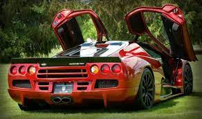

SSC Ultimate Aero TT- это cуперкар с двигателем мощносьтю 1287 л.с. и крутящим моментом 1508 HM, страна сборки годы производства 2007-2009 год

снаряжёная масса 1234 кг, разгон до 100 км/ч за 2,80 секунды объём бака 70 литров, к сожалению коробка передач
стоимость 1 млн евро